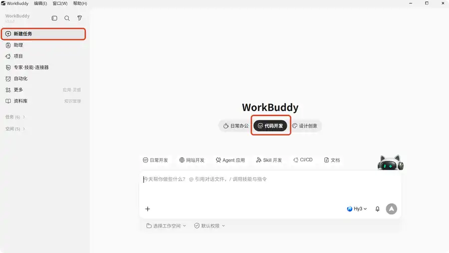
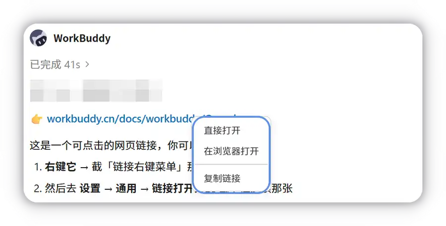
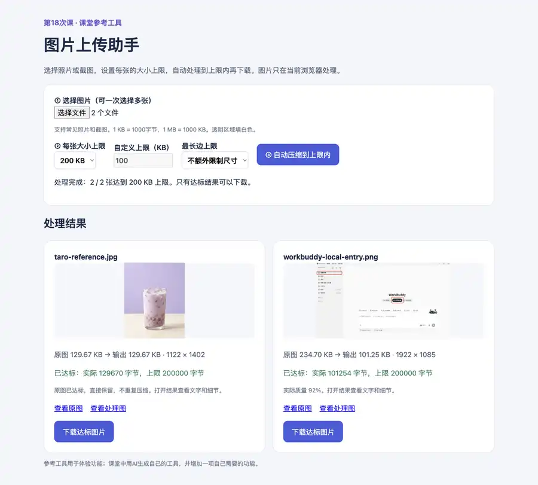
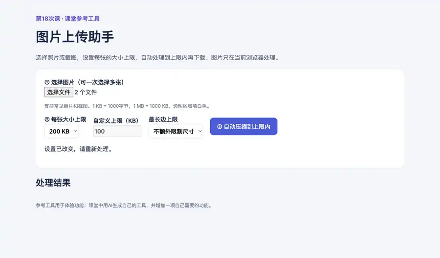

第六章｜AIGC应用与实践 · 第18次课 · 2 学时
AI编程入门：制作图片批量压缩工具
00 知识回顾
上一课用文字和参考图生成海报，再通过追问修改画面。本课继续用自然语言提出要求，让AI编写一个可以选择图片、调整参数和下载结果的网页工具。
01 任务预告
本课成果： 一个“图片上传助手”。一次选择多张照片或截图，设置每张图片的大小上限，自动调整质量和尺寸；只有实际大小不超过上限的结果才能下载。
完成标准： 每张可下载图片都不超过选定上限；超出时显示未达标并禁用下载。学生自行增加一项实用功能，再修改一处具体问题。
使用场景： 照片太大，上传时超过大小限制；多张截图要逐张处理。本课把这些重复操作做成一个以后还能打开使用的小工具。
02 基础概念
1｜AI辅助编程：让AI把功能要求写成程序
AI辅助编程是用自然语言说明工具需要完成什么，再让AI生成和修改代码。普通聊天回答“怎样压缩图片”，编程任务则要交付一个真的能选图、处理和下载的页面。你不必先背代码，但需要说清功能，并打开成果实际使用。
本课例子： “做一个图片压缩网页”还不够明确。补上“选照片、设置大小上限、自动压到上限内、下载达标结果”，AI才知道页面要有哪些操作。
谁在处理图片？ AI负责写程序；工具打开后，图片处理由浏览器中的程序完成。本课设计的工具不需要每压缩一张图片就再问一次AI。
2｜界面与交互：页面要对你的操作作出响应
界面是你看到的按钮、输入区和预览图；交互是点击或调整它们后发生的变化。一个好看的页面可能只有外观，按钮没有动作。制作小工具时，要把“用户做什么”和“页面接着做什么”一起说清楚。
本课例子： 点击“选择图片”打开文件选择窗口；选择200KB或500KB上限；点击“开始处理”出现每张的实际大小和是否达标；点击“下载”得到不超过上限的图片。这些动作连起来，才是可用的工具。
3｜大小上限：按实际字节判断能不能上传
压缩质量改变图片保存时保留的细节；降低质量通常能减小照片体积，也可能让小字和纹理变模糊。尺寸是图片的宽高，缩短最长边会减少像素数量。两种设置可以组合使用，但“质量80%”不表示文件大小一定减少20%，手动调整质量也不保证文件达到上传上限。
本课例子： 上传入口要求每张不超过200KB，就设置200KB上限。程序先尝试降低质量，仍超出时同比例缩小尺寸，再重新计算实际大小。带小字的截图完成后放大看文字，不用一味降低质量。
本课工具按1KB＝1000字节、1MB＝1000KB计算：200KB的输出上限是200000字节。程序用实际字节数判断，不能只把显示数值四舍五入成“200KB”就说达标。操作时以实际上传入口给出的限制为准。
本课先用常见照片和截图，统一输出为JPG；透明图片转为JPG时，要求程序用白色填充透明区域。
4｜功能迭代：从能用到更顺手
功能迭代是在已有工具上提出具体变化。先完成一张图片的处理，再增加多张处理；基础版就应具备大小上限、达标提示和下载限制，再增加对比预览等功能。每次改动都应能在页面上看到，不把“更专业”“再优化”当作完整要求。
本课例子： “预览中的竖图被拉宽了，请保留原图比例，完整显示，不裁掉图片边缘。”这句话指出了位置、现象和期望，AI可以据此修改对应部分。
03 核心案例
教师示范｜把照片处理做成一个网页工具
情境： 课堂模拟一个每张图片不超过200KB的上传要求，希望一次处理几张照片，直接下载达标结果。教师先展示工具的选择、处理和下载动作，再用WorkBuddy生成基础版，追加多张处理功能。
软件与材料： WorkBuddy、浏览器，一张照片和一张带文字的截图。使用不含账号、私人聊天和证件信息的图片；两类图片用于观察照片细节与文字清晰度。
操作①｜说明功能，让AI生成可打开的网页
在WorkBuddy点击“新建任务”，选择“代码开发”，再点击输入框下方的“选择工作空间”，选中本课演练文件夹。直接输入下方需求，成果保存在这个文件夹中。
制作一个可以在浏览器打开的本地图片压缩工具，界面用中文。
第一版先处理一张图片，包含以下功能：
1. 点击按钮选择JPG、PNG或WebP图片，显示预览。
2. 设置每张大小上限：200KB、500KB、1MB，也能输入自定义KB；默认500KB。按1KB=1000字节、1MB=1000KB计算，拒绝空值、负数和非整数。
3. 点击“开始处理”，先调整输出质量，仍超出时同比例缩小尺寸，再测实际字节数，直到不超过上限。质量不低于55%，最长边不缩到320像素以下；原图较小就不放大。输出JPG，透明区域填白色。
4. 显示原大小、实际输出字节数、大小上限和输出宽高。实际输出不超过上限时，显示“已达标”并允许下载；达到缩小下限仍超出时显示“未达标”、原因和裁去无关区域或更换合适材料的建议，禁用下载。用实际字节判断，不用四舍五入后的显示值判断。
5. 保持图片宽高比例，预览完整显示图片；提供“查看原图”和“查看处理图”，方便放大比较。未选图片就点击处理时，提示先选择图片。改变图片或压缩参数后，清空旧结果并提示重新处理，不能继续下载旧结果。
只生成一个可直接打开的HTML文件，样式和脚本放在同一文件中；不用外部库、服务器、登录或云服务，不上传图片，不覆盖原图片，也不要发布上线。
将工具保存在当前演练文件夹，并告诉我从哪里打开它。请完成工具，不只解释制作方法。

先选择“代码开发”，再从输入框下方选择本地工作空间。
操作②｜打开成果，实际处理一张图片
生成结束后，点击对话中的成果卡片或本地预览链接。如果返回的是HTML文件，在成果列表或演练文件夹找到它，用浏览器打开。网页中出现“选择图片、大小上限、开始处理、下载”等控件后，开始使用。
选择照片，先设置500KB上限处理，再改为200KB重新处理。结果应分别不超过对应上限，不要求刚好等于上限。换成带文字的截图，点击“查看处理图”，在浏览器中放大查看主要文字。文件大小达标不代表文字一定清晰；200KB是固定上传要求时，应先裁去无关区域或更换材料，不能靠提高上限解决。
只下载标为“已达标”的结果，打开下载图片查看内容；“未达标”时下载按钮应禁用。生成后的页面外观可以不同，以上功能应可以找到并使用。

右键点击对话中的链接，可以选择在浏览器打开。
操作③｜追加多张处理，观察功能变化
回到生成这个工具的原任务，继续发送追加要求，不另开一个与旧代码无关的对话。
在刚才的图片压缩工具上增加多张处理功能：
一次可以选择多张图片，用同一大小上限逐张自动处理；每张显示自己的预览、原大小、实际输出字节数、上限和是否达标。只有达标图片有可用下载按钮，未达标图片显示原因并禁用下载。
处理期间显示进度，暂时禁用“开始处理”按钮；全部处理完成后恢复按钮。
一张图片处理失败时，只在该图片旁提示，不中断其他图片。
保留原来的单张处理、比例和本地处理方式，不增加云服务。完成后告诉我打开更新成果的位置。
重新打开更新成果，选择两张不同的图片。结果中应出现两个独立条目，每个下载按钮对应自己的图片。批量上限对每张图片分别生效，不是两张图的合计大小；每个可下载结果都必须不超过上限。

参考工具设置200KB上限，两张图片分别显示实际字节数、达标状态和下载按钮。
操作④｜把实际问题说清楚，再修改
先在500KB上限下处理图片，再将上限改为200KB。旧结果应立即清空，提示重新处理，防止下载仍按旧上限生成的图片。若旧下载按钮仍保留，把看到的情况反馈给AI。
请修改刚才工具的结果更新方式：
我在500KB上限下处理了图片，再改为200KB，旧结果和下载按钮仍在，容易误下载。
更换图片、大小上限或最长边参数时，立即撤下旧结果和下载按钮，提示“设置已改变，请重新处理”。处理过程中暂时禁用这些设置，完成后再恢复。
重新处理后，按当前上限显示实际字节数和达标状态，只允许下载当前达标结果。保留批量处理和查看原图、处理图的功能。
如果自己的工具已能正确更新结果，就针对使用时看到的另一处问题修改，例如竖图预览被裁切。修改后重新打开工具，重复原操作，观察问题位置是否改变。

从500KB改为200KB后，旧结果撤下，页面提示重新处理。
方法参考： WorkBuddy官方“零代码制作本地应用”演示选择代码开发、生成本地应用并用具体反馈继续修改。图片输出质量的技术依据见浏览器Canvas图片输出说明。
04 实践任务｜制作自己的图片上传助手
软件与材料： 沿用WorkBuddy和浏览器。准备2—3张自己的照片或截图，至少包含一张照片和一张有文字的截图；先裁掉无关个人信息。图片用来试用生成工具，无需先把图片上传给AI。
你的成果： 一个支持多张处理的图片工具，包含自己选择的一项扩展功能。工具名称、颜色和布局可以调整，但功能必须能用。
操作①｜生成自己的基础工具
在新任务中选择演练文件夹，发送下面的需求。把“我更常处理”替换成自己的使用场景，例如生活照片、课程截图或实习材料图片。
我要制作一个本地“图片上传助手”，我更常处理：【生活照片／课程截图／实习材料图片，选择或改成自己的用途】。
请生成一个可直接在浏览器打开的HTML工具，中文界面，样式和脚本内嵌，不使用外部库、服务器和云服务，不上传图片，不覆盖原图，不发布上线。
支持一次选择多张JPG、PNG或WebP图片。必须设置每张大小上限：200KB、500KB、1MB或自定义整数KB，默认500KB；1KB=1000字节。
在浏览器自动调整质量和尺寸，保持比例且不放大原图。质量最低55%，最长边最低320像素；达到下限仍超出就停止。统一输出JPG，透明区域填白色。
每张显示完整预览、原大小、实际输出字节数、上限及达标状态。仅实际字节数不超过上限的图片允许下载；未达标时给出原因、建议裁去无关区域或更换合适材料，并禁用下载。不能用四舍五入的显示大小判断。提供“查看原图”和“查看处理图”，便于放大比较。更换图片或参数后清空旧结果，提示重新处理。未选图时给出提示，处理时显示进度并暂时禁用图片选择、参数和处理按钮，完成后恢复。
请完成可操作工具并告诉我在当前演练文件夹从哪里打开，不只给出功能介绍。
打开成果，放入自己的两张图片，设置200KB上限，自动处理后下载达标结果。大小上限是基础功能，完成后再选择扩展。
操作②｜选择一项真正会用的扩展
三项中选一项，在原任务继续输入。每项都要在更新后的页面中实际使用。
| 可选功能 | 直接可用的追加要求 | 使用后应看到什么 |
|---|---|---|
| 限制最长边 | 增加最长边选项：不额外限制尺寸、1600、1200、800像素。同比例缩小，不放大较小原图，显示输出宽高，必须继续满足每张大小上限；若尺寸仍过大，继续自动缩小。 | 切换选项后，大图输出宽高改变，比例保持且下载结果仍不超限 |
| 压缩前后对比 | 每张图片增加“原图／处理后”切换，预览区域保持相同显示尺寸，可以放大查看，保留大小信息和下载按钮。 | 能切换两种画面，看清照片细节或截图小字 |
| 单张重新处理 | 每张结果旁增加“重新处理”按钮；修改大小上限后，可以只重新处理这一张，更新它的大小、达标状态和下载按钮，其他图片的旧结果标为待重新处理并禁用下载，避免把旧结果当作新上限下的成果。 | 改上限后旧结果不能直接下载；重新处理所选图片后，它按新上限更新 |
操作③｜用具体反馈改一处问题
用新增功能处理自己的图片。选择一处实际问题反馈给AI，例如提示文字看不清、预览图被裁切、下载按钮与图片没有一一对应。已有功能正常时，可以针对自己的用途改进按钮位置或结果提示。
请修改刚才的工具。
问题位置：【例如：结果区第一张图片的预览】。
我实际看到：【例如：竖图顶部被裁掉】。
我希望改成：【例如：完整显示整张图，保持比例】。
保留大小上限、自动压缩、多张处理、实际字节显示、仅达标可下载和我已追加的功能。完成后告诉我打开更新成果的位置。
重新打开工具，重复刚才触发问题的那次操作，观察对应位置是否改变。若生成中途失败，在原任务让AI继续完成；若界面有按钮却没有结果，附上页面截图并说明点击了哪个按钮、页面出现了什么。
最后集中看三项
可下载图片的实际字节数不超过选定上限，未达标时不能下载；自己追加的功能有效；照片比例正确，截图中的主要文字可读。
05 本课总结
AI辅助编程从“描述功能”走到“打开使用”，再把具体问题反馈给AI。工具不只是一个好看的页面，要能响应选择、处理和下载动作。
| 成果自查 | 看哪里 |
|---|---|
| 大小限制有效 | 每张可下载图片不超限；未达标时下载禁用 |
| 扩展功能有效 | 所选功能在页面上能操作，并产生相应变化 |
| 修改对应问题 | 重新执行原操作，问题位置已按要求改变 |
下节预告： 将零散商品材料整理成统一栏目，练习给AI提供更清楚的输入。